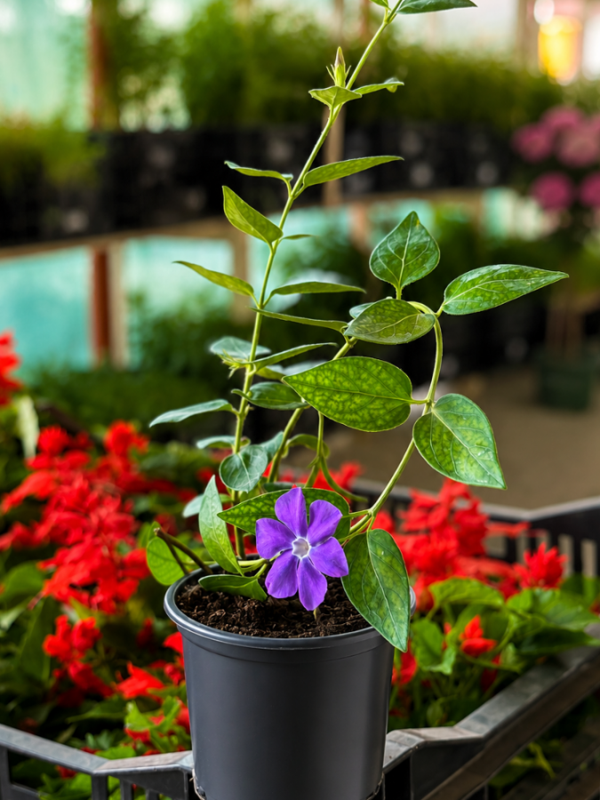

Ще однією рослиною, що зустрічається у багатьох
легендах та казках українського народу, є барвінок (Vinca). Це трав'яниста
багаторічна рослина, яка має видовжене листя, квітки синьо-фіолетового
кольору, плід, що складається з двох вільних листків. Барвінок зацвітає в
травні-липні. Поширений барвінок в Україні, Білорусі та на Кавказі.
